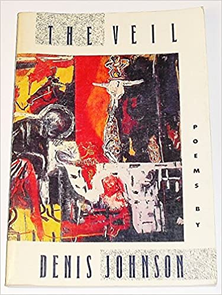

Loving you is every bit as fine
as coming over a hill into the sun
at ninety miles an hour darling when
it’s dawn and you can hear the stars unlocking
themselves from the designs of God beneath
the disintegrating orchestra of my black
Chevrolet. The radio clings to an un-
identified station—somewhere a tango suffers,
and the dance floor burns around two lovers
whom nothing can touch—no, not even death!
Oh! the acceleration with which my heart does proceed,
reaching like stars almost but never quite
of light the speed of light the speed of light.
The Veil is a collection of poems of grief, regret, nightmare, acceptance, redemption, and the dark recesses of the soul.